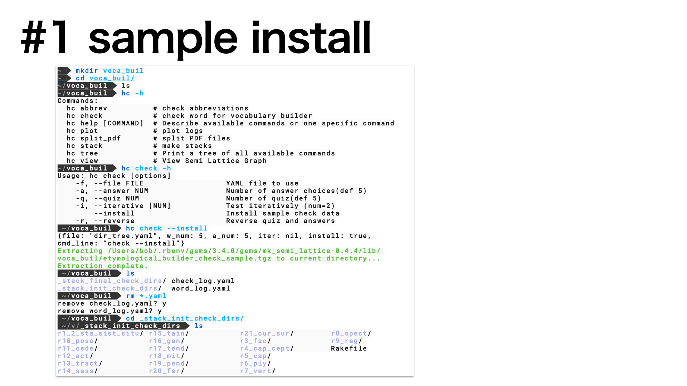
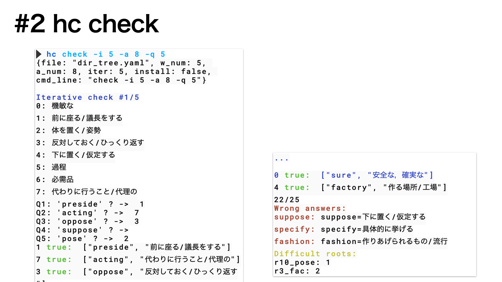
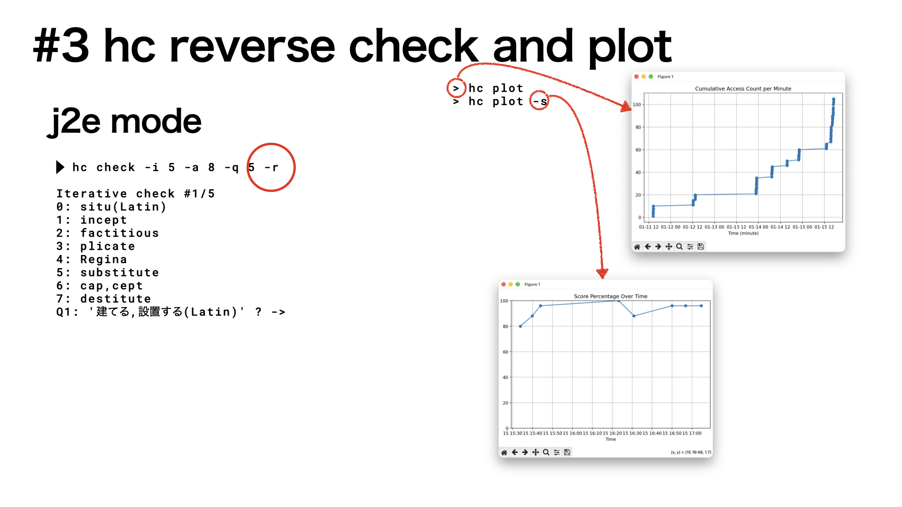
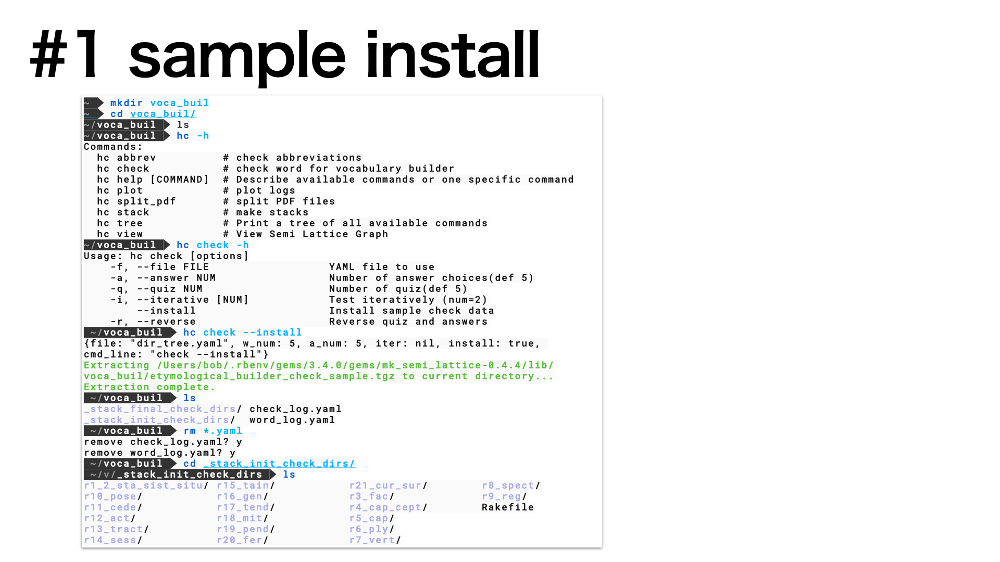
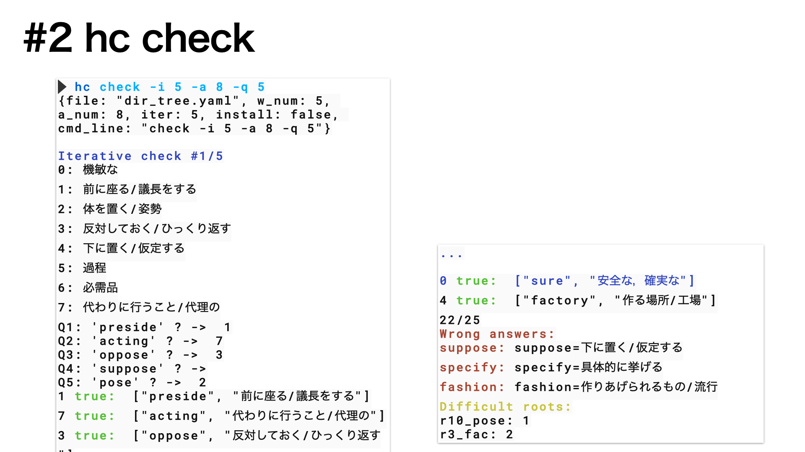
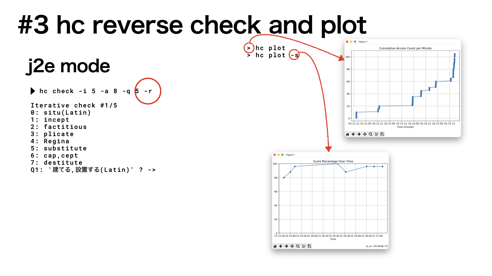

Vocabulary Builderの簡単な説明
Table of Contents
1. name
- hc checkは英単語のetymological(語源に基づく) buildingを行うclaです．
- 簡単な始め方を紹介します．
2. usage
2.1. sample install
|  |
| Fig.1 サンプルのインストール方法． |
2.2. hc check
|  |
| Fig.2 checkの仕方． |
2.3. plot
|  |
| Fig.3 プロットの例. |
|  |
| Fig.1 サンプルのインストール方法． |
|  |
| Fig.2 checkの仕方． |
|  |
| Fig.3 プロットの例. |
Created: 2026-01-15 Thu 23:10